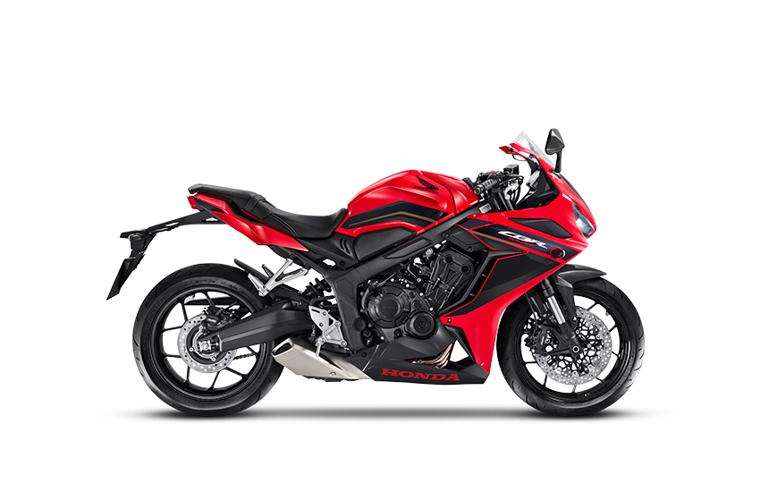
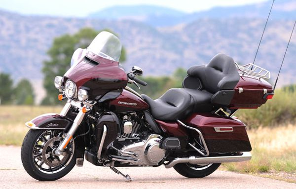

As esportivas são motos com design futurista e mecânica de excelente desempenho.
Os motores geralmente possuem mais de 600 cilindradas, o que permite maior aceleração, algumas alcançando
velocidades superiores a 300 Km/h.

Modelo Touring
Descrição e detalhes do Modelo Touring.
Entre os tipos de moto, a touring é uma excelente opção para viajar.
Bastante moderna e com amplo espaço para acomodar bagagens, ela
também possui altas cilindradas. Ao manejá-la, o condutor desfruta de
agilidade e conforto sobre um conjunto que suporta perfeitamente altos pesos

Modelo Cruiser
Descrição e detalhes do Modelo Cruiser.
São os modelos tradicionais das motos custom sem modificações estruturais. Estas motos foram projetadas para percorrerem
grandes distâncias a velocidades de cruzeiro. Possuem grande distância entre eixos, guidão largo e
tanque de combustível com grande capacidade.